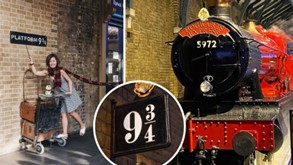

Welcomed to Hogwarts School of Witchcraft
Hogwarts School, located somewhere in the Highlands of Scotland, consisted of the large Hogwarts Castle and extensive school grounds surrounding it, which included sloping lawns, flowerbeds, vegetable patches, as well as a loch (called the Black Lake), a large dense forest (called the Forbidden Forest), several greenhouses and other outbuildings, and a full-size Quidditch Pitch. One of the castle's towers held an owlery, which housed all the owls owned by the school and by students.
Typical school year:
 Term began on 1 September. Students usually reached Hogwarts via the Hogwarts Express, which left Platform 9¾ of London's King's Cross Station at 11 a.m. sharp. There seemed to be other ways of entering the school, such as via broomsticks or Floo Powder, or simply Apparating to a nearby location such as Hogsmeade. Missing the Hogwarts Express for any reason was a very serious problem, but would not cost the student points as long as they got there before the term had officially started. The Hogwarts Express brought the students to Hogsmeade station. First years traditionally crossed the Black Lake in boats with the gamekeeper, travelling under an opening in the rocks upon which Hogwarts was built, through a curtain of ivy, and finally into an underground harbour.